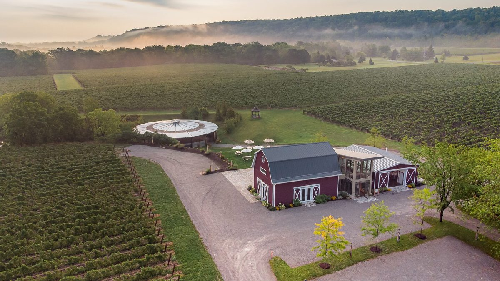

Our work in practice
Case Studies
Five municipal engagements in Ontario and Nova Scotia, each led by Bruce Peever.
The case studies
-
 Taxation review A Former Town’s Tax Question Answered: Low Assessments, Not Over-Taxation A municipal district on the eastern shore of Nova Scotia Taxes reflected low assessments and mandated service levels, not over-taxation. Three practical recommendations followed. Read the case study
Taxation review A Former Town’s Tax Question Answered: Low Assessments, Not Over-Taxation A municipal district on the eastern shore of Nova Scotia Taxes reflected low assessments and mandated service levels, not over-taxation. Three practical recommendations followed. Read the case study -
Financial planning One Model, Ten Years of Clarity: A Financial Plan Council Can Steer By An Eastern Ontario municipality A ten-year long-term financial plan and one financial model, with staff trained to keep it current. Read the case study
-
Organizational review A Clear Roadmap to Better Service and Better Value for Taxpayers A mid-sized Northern Ontario city A prioritized roadmap of 36 opportunities, a long-term organizational structure and an implementation plan. Read the case study
-

Governance review Public Ownership Lenders Can Trust, With Growers at the Table: A Governance Model for a Regional Irrigation System A regional municipality in one of Ontario’s specialty crop areas The Steering Committee chose a municipal services corporation with formal grower participation, plus a roadmap to set it up. Read the case study -
Shared services review One Dispatch Centre for Police and Fire: A Shared Services Plan for a City and Its Police Service A Northern Ontario city and its police services board Eight ranked recommendations, with the core of the advice now in a three-year agreement between the City and its police board. Read the case study